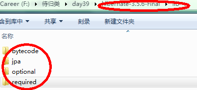

1、hibernate的概念
hibernate是ormapping技术，也就是对象关系映射技术实现的一种。
hibernate与jdbc技术不同的一点在于jdbc是面向sql语句的技术，而hibernate是面向对象的一门技术。
//构建session工厂


2、使用JDBC的优缺点
·使用JDBC的优点：
JDBC有连接池，所以获取connection的速度会非常快，因为不需要每次重新创建connection。
·使用JDBC的缺点：
<1>使用JDBC的时候，由于每次都要自己书写sql语句，因此使用起来比较繁琐。
<2>执行完JDBC操作之后，每次都需要自己从结果集中获取信息封装进对象中，这样的操作非常麻烦。
<3>每次都需要在finally中关闭资源，由于每次关闭资源也可能发生异常，所以关闭下个资源的操作需要放入到关闭上个异常的fianlly操作中。
<4>由于每次进行crud的代码过多，做查询操作的时候更是麻烦，所以会造成代码冗余量太大。
<5>JDBC并没有做到数据的缓存，所以每次去取数据的时候，即使是以前取过的数据也需要重复读取，这样会浪费带宽，并且降低数据库的并发量。
注:在做查询操作的sql语句中，尽量不要使用in、between…and…以及做判断(例如>=3)等操作，因为这样的语句会对每种情况进行遍历，然后执行每种情况的sql语句，从而降低了效率。使用union以及or则不需要遍历，虽然也是执行了多条sql语句，但是效率要比前者高。
·使用hibernate的优点
<1>由于hibernate是面向对象的操作，所以不需要自己书写sql语句。
<2>由于hibernate是自己内部关闭资源的，所以不需要自己手动去关闭。
<3>由于hibernate会执行sql语句并且自动封装成对象返回，所以这样的操作要比JDBC手动操作方便。
<4>hibernate中提供了一级缓存、二级缓存以及查询缓存等数据缓存技术，所以不用去取重复性的数据。
<5>由于hibernate针对多种数据库都适用，所以它的可移植性很高。
·使用hibernate的缺点
<1>由于sql语句都是由hibernate内部生成的，所以如果要对sql语句做优化，几乎是不可能的事情。
<2>如果一张表中的数据到达千万级别，hibernate生成的sql语句可能效率并不是很高，这个时候应该考虑用ibatis承担相关的工作，所以hibernate只适合一些中小型的项目开发。
3、hibernate提升性能的方法
所谓性能问题，也就是说发出的sql语句越少，性能就越高，hibernate针对性能问题才具了以下几种技术：
<1>延迟加载
<2>数据缓存
<3>抓取策略
4、映射文件的作用
*.hbm.xml是一种映射文件，它的作用在于建立表到类的映射。
<1>实现表名和类名之间的映射。
<2>实现表中字段名称和类中属性的名称的映射。
<3>实现表里字段类型和属性类型的映射。
5、hibernate中的几个重要组成部分
<1>持久化类
<2>映射文件
<3>hibernate的配置文件，用于产生链接
<4>客户端
6、hibernate执行的大概流程
当运行到代码：Session session = new Session()；session.save(person);的时候，hibernate就会去映射文件查找person对象对应的表，然后再去查找person对象属性对应的表的字段，然后拼接sql语句。然后再进行JDBC操作。
7、hibernate的源码存放路径
hibernate-distribution-3.5.6-Final/project/core/src/main/java。
8、hibernate启动需要的一些jar包
注:不要忘记hibernate根目录下的hibernate3.jar核心包。

7、第一次使用hibernate
<1>编写person类
public class Person implements Serializable {
private Long pid ;
private String pname ;
private String psex ;
public Long getPid() {
return pid ;
}
public void setPid(Long pid) {
this.pid = pid;
}
public String getPname() {
return pname ;
}
public void setPname(String pname) {
this.pname = pname;
}
public String getPsex() {
return psex ;
}
public void setPsex(String psex) {
this.psex = psex;
}
}
<2>建立表和类之间关系映射表
从hibernate提供的例子中copy一份User.hbm.xml，然后进行修改。
这里书写一个Person.hbm.xml
<?xml version ="1.0" ?>
<!DOCTYPE hibernate-mapping PUBLIC
"-//Hibernate/Hibernate Mapping DTD 3.0//EN"
"http://hibernate.sourceforge.net/hibernate-mapping-3.0.dtd" >
<hibernate-mapping package ="cn.itheima.hibernate.domain" >
<!--
class用于描述一个持久化类
name属性+package就是类的全名
table就是表名，如果不写，就和类名一致
catalog是数据库的名称，一般情况下，可以不写
-->
<class name ="Person" table="person" >
<!--
id代表标示符的属性
name为属性的名称，它与持久化中的get后的属性是对应的
column就是表中的列名，默认就是属性的名称
length就是数据库中类型的长度，如果不写，默认就是最大长度
-->
<id name ="pid" column="pid" type="java.lang.Long" length="5" >
<!--
generator是主键的产生机制
-->
<generator class ="increment" />
</id>
<!--
property表示的是一般属性
-->
<property name ="pname" column="pname" type="java.lang.String" />
<property name ="psex" column="psex" type="java.lang.String" />
</class>
</hibernate-mapping>
<3>建立hibernate.cfg.xml映射文件
从hibernate的包中拷贝出来一个hibernate.cfg.xml文件，进行修改，参数可以从hibernate.properties中读取。
<!DOCTYPE hibernate-configuration PUBLIC
"-//Hibernate/Hibernate Configuration DTD 3.0//EN"
"http://hibernate.sourceforge.net/hibernate-configuration-3.0.dtd" >
<hibernate-configuration>
<session-factory>
<property name="hibernate.dialect" >org.hibernate.dialect.MySQLDialect</ property>
<property name="hibernate.connection.driver_class" >com.mysql.jdbc.Driver</ property>
<property name ="hibernate.connection.username" >root</ property>
<property name ="hibernate.connection.password" >sorry</ property>
<property name="hibernate.connection.url" >jdbc:mysql://localhost:3306/myhibernate</property >
<property name ="hbm2ddl.auto" >update</ property>
<mapping resource ="cn/itheima/hibernate/domain/Person.hbm.xml" />
</session-factory>
</hibernate-configuration>
<4>在PersonDao中写入如下代码：
Configuration conf = new Configuration();
//configure方法默认读取的就是classpath目录下的hibernate.cfg.xml文件
//所以必须放在classpath下面，并且文件名称必须是hibernate.cfg.xml
conf.configure();
//如果配置文件名称不是hibernate.cfg.xml或者不是放在classpath下面，那么必须通过下面这种方式引入
//conf.configure("路径");
//由于配置文件中设置hbm2ddl.auto为update，所以下面的这条代码也会创建表，但是不能创建数据库
SessionFactory sessionFactory = conf.buildSessionFactory();
//创建一个session
Session session = sessionFactory.openSession();
//利用session开启一个新的事务
Transaction transaction = session.beginTransaction();
//保存一个新建的person对象到数据库
Person person = new Person();
person.setPname("wq");
person.setPsex("male");
session.save(person);
//提交事务
transaction.commit();
//关闭session
session.close();
<5>执行结果：
<6>补充点：
* 一个sessionFactory只能连接一个数据库。
* 配置文件的信息、映射文件的信息都会存储到sessionFactory中。
* sessionFactory是一个重量级的类，它是单例的，并且是线程安全的。
* hibernate可以根据hibernate.cfg.xml连接数据库、动态创建表、引入映射文件。
注:
* 持久化类的属性必须有get、set属性，否则hibernate是无法在读取到配置文件之后，无法获取以及设置该属性的值。
* 如果没有在链接配置文件中引入一个类，那么这个类将不会被认为是一个持久化类。从而在执行程序的时候会报出Unknown entity的错误。
8、修改一个持久化类的数据
<1>修改创建sessionFactory的方式：
public static SessionFactory sessionFactory;
static{
Configuration conf = new Configuration();
conf.configure();
sessionFactory = conf.buildSessionFactory();
}
<2>PersonDao.java
public void updatePerson() {
Session session = sessionFactory.openSession();
Transaction transaction = session.beginTransaction();
//首先提取数据，然后进行修改，最后更新
Person person = (Person)session.get(Person. class, 1L);
person.setPname( "wq2");
session.update(person);
transaction.commit();
session.close();
}
<3>执行结果：
注:
* session.get()方法的第二个参数是主键对应的属性，类型必须要匹配，本方法利用的就是默认的构造函数创建对象，所以持久化类中一定要有一个默认的构造函数。
* 在hibernate内部，如果缓存中已经存在一个有相关id值的持久化类副本，那么就会执行update方法。否则，不执行。
9、删除一个持久化对象
Method 1:
PersonDao.java
public void updatePerson() {
Session session = sessionFactory.openSession();
Transaction transaction = session.beginTransaction();
Person person = (Person)session.get(Person. class, 1L);
session.delete(person);
transaction.commit();
session.close();
}
Method 2:
public void updatePerson() {
Session session = sessionFactory.openSession();
Transaction transaction = session.beginTransaction();
Person person = new Person();
person.setPid(1L);
session.delete(person);
transaction.commit();
session.close();
}
执行结果：
10、查询持久化类的信息
PersonDao.java
public void updatePerson() {
Session session = sessionFactory.openSession();
List<Person> personList = session.createQuery( "from Person").list();
for(Person person:personList){
System. out.println(person.getPname());
}
session.close();
}
执行结果：
注:方言是为了告诉hibernate链接的是mysql数据库
< property name ="hibernate.dialect">org.hibernate.dialect.MySQLDialect </property>
11、Hibernate项目的逆向工程
在实际工程中，经常是先设计数据库表结构，然后自动生成持久化类以及Dao、Service层和映射文件。但是前提是必须把项目变成hibernate类型的项目。
将创建的工程转换为hibernate项目的方式：
点击MyEclipse——>Project Capabilities——>Add Hibernate Capabilities——>这里不需要导入MyEclipse Libraries，所以不需要选择MyEclipse Libraries，如果使用的是Hibernate3版本的话，那么就选择Hibernate3.x就可以了——>因为是已经存在的工程，所以选择Existing,并且导入配置文件的地址——>设置好待生成的IBM自己实现的HibernateSessionFactory的存放的工程文件夹。
创建持久化类以及Dao、Service层和映射文件的步骤：
Open Perspective——>MyEclipse Database Explorer——>右击mysql——>Edit——>输入用户名、密码以及URL地址，并且加载进数据库驱动——>右击Person表——>点击Hibernate Reverse Engineering——>点击Browse——>如果现在的工程不是Hibernate类型的工程，那么就不会看到本工程，如果是，则可以看到。——>选择该工程——>设置生成文件的文件夹——>需要生成POJO(不需要生成抽象类，所以不需要点create abstract class)以及相应的DAO和映射文件——>设置主键生成方式——>生成成功。
注:在MyEclipse中提供了如何进行进行逆向工程的文档帮助。
12、Hibernate的类型
Hibernate提供了一些类型，这些类型都与Java中的类型一一对应，映射文件中的<property>标签的type属性一般不用设置为hiberntea类型，除非想要按照自己特定的方式进行转换，例如Date类型的java数据如果只想转换到数据库只剩下时间，那么type中就可以填入time。
Java数据类型的Java属性，经过映射文件中的type转换为数据库中的类型并且存储相关的数据。但是type中如果设置的是java类型，那么就会比hibernate类型效率高，因为这样不用再进行中间的转换环节了。
13、主键的几种生成机制
* increment
主键必须是数字类型，在主键的最大值的基础上加1，这一步是由hibernate完成的。
* identity
与increment基本一致，只是id加1的操作是由数据库完成的。
这时候就必须设置表的主键可以自动增加。否则，数据库无法更新主键，就会报错。
identity的效率比increment更高，因为不必再用程序操作主键加1了。
* sequence
利用序列插入主键。
* hilo
利用高地位插入主键。
* uuid
利用uuid插入主键。这时候主键的类型必须是String类型的。生成主键的这个过程也是由hibernate内部自动完成的。
* native
根据不同的数据库自动生成标示符的支持能力，来选择是使用identity、sequence和hilo标示符生成器。
* assigned
这种方式指的是手动赋值，如果不手动赋值，就会报错。
14、设置
< property name= "show_sql" >true</ property>
就可以显示sql语句了。
设置
< property name= "hbm2ddl.auto" >update</ property>
的时候，如果设置的值为create-drop，那么启动时创建表，应用程序结束时，销毁表。
如果设置的值为update时，那么如果表不存在，则创建表，如果存在，则验证更新。
如果设置的值为validate，则验证表的结构，如果不一致，则直接报错，而不会更新表结构。